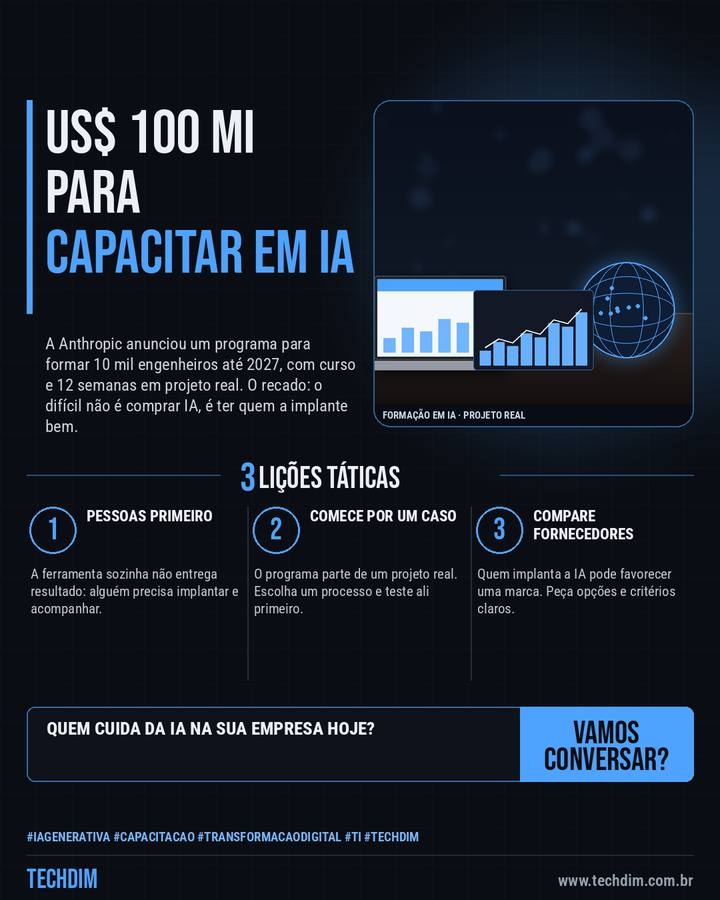

Notícia de tecnologia
Anthropic investe US$ 100 milhões para formar 10 mil engenheiros de IA para empresas
A Anthropic anunciou um programa para formar 10 mil engenheiros até 2027, com curso e 12 semanas em projeto real. O recado: o difícil não é comprar IA, é ter quem a implante bem.

Em resumo
- A Anthropic criou a Claude Frontier Academy, com US$ 100 milhões para formar 10 mil engenheiros até o fim de 2027
- O formato lembra residência médica: curso presencial de vários dias e 12 semanas aplicando um projeto real na empresa do aluno
- As primeiras turmas são em Londres, Nova York e São Francisco, por indicação de grandes consultorias e empresas parceiras
Comprar IA é fácil; difícil é ter quem a implante bem. Vale para empresa grande e pequena.
Por que importa
Mostra que a falta de gente preparada para implantar IA virou prioridade do mercado, o que afeta a contratação e a escolha de parceiros em PMEs.
O que fazer na prática
- Pessoas primeiro. A ferramenta sozinha não entrega resultado: alguém precisa implantar e acompanhar.
- Comece por um caso. O programa parte de um projeto real. Escolha um processo e teste ali primeiro.
- Compare fornecedores. Quem implanta a IA pode favorecer uma marca. Peça opções e critérios claros.
Fontes consultadas
Mais do Radar de hoje
Leia também
Este texto resume as fontes citadas na data de publicação. Confira sempre o aviso oficial do fabricante antes de agir em produção.